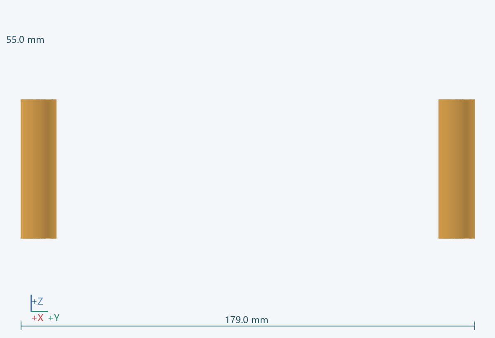
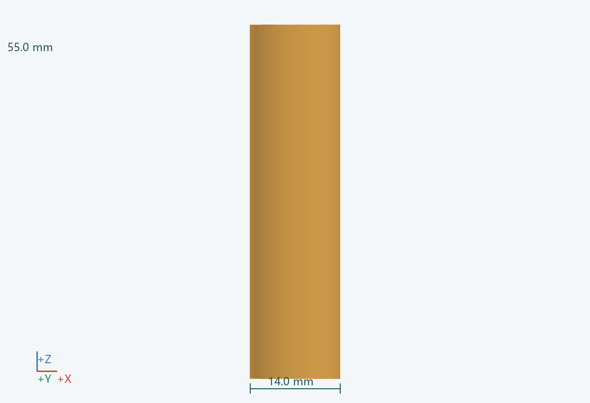

几何包络
14.0 × 179.0 × 55.0 mm（含所示实例）
功能
承担轮组径向载荷，减少载荷直接施加到电机轴。
连接 / 基准
固定于 0502；通过 0504 连接轮缘；驱动联接与电机对中。
材料 / 工艺
独立轴承座和匹配主轴
拆装
轮组卸下后沿 Z 轴取出。
待验证
核验最高许可转速、径向跳动、轴向定位和润滑；未选定具体轴承。 关联：U09
实例
PRT-0503-B__L, PRT-0503-B__R


14.0 × 179.0 × 55.0 mm（含所示实例）
承担轮组径向载荷，减少载荷直接施加到电机轴。
固定于 0502；通过 0504 连接轮缘；驱动联接与电机对中。
独立轴承座和匹配主轴
轮组卸下后沿 Z 轴取出。
核验最高许可转速、径向跳动、轴向定位和润滑；未选定具体轴承。 关联：U09
PRT-0503-B__L, PRT-0503-B__R